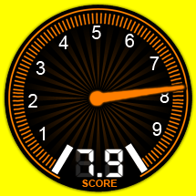
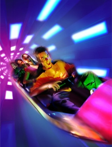

SPACE MOUNTAIN
SPECS
Max Height: 90 ft.
Max Speed: 27 mph
Inversions: 0
Duration: 2 min. 35 sec.
Manufacturer: Disney
REIVEW
Space Mountain is a Disney World classic, but as far as the coaster is concerned, it suffers. Just look at the stats, max speed 27 mph?! Come on. It is still fun to ride though because it is in complete darkness with a starry ceiling which gives the feeling that you’re miles up in space. Fun ride, especially if you’re a younger one.